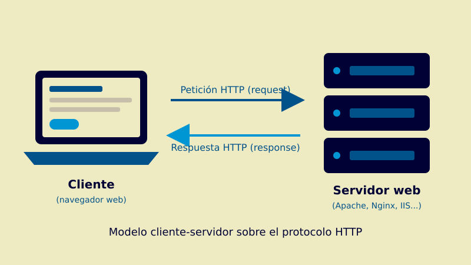

¿Cómo se comunican el navegador y el servidor?
El Hypertext Transfer Protocol (HTTP) es el protocolo para la transferencia de archivos en la web. Su funcionamiento se basa en solicitudes y respuestas: el cliente (el navegador) envía una petición y el servidor web responde con el estado de la operación y, si corresponde, el recurso solicitado.

Pasos de una comunicación web
- El usuario escribe una dirección (URL) en el navegador.
- El navegador envía una petición al servidor web.
- El servidor ejecuta el código necesario y prepara la respuesta.
- El servidor envía la respuesta y el navegador muestra la página.
Comandos básicos de HTTP
- GET
- Solicita leer información del servidor.
- HEAD
- Solicita leer únicamente la cabecera de la respuesta.
- POST
- Envía información al servidor, por ejemplo, los datos de un formulario.